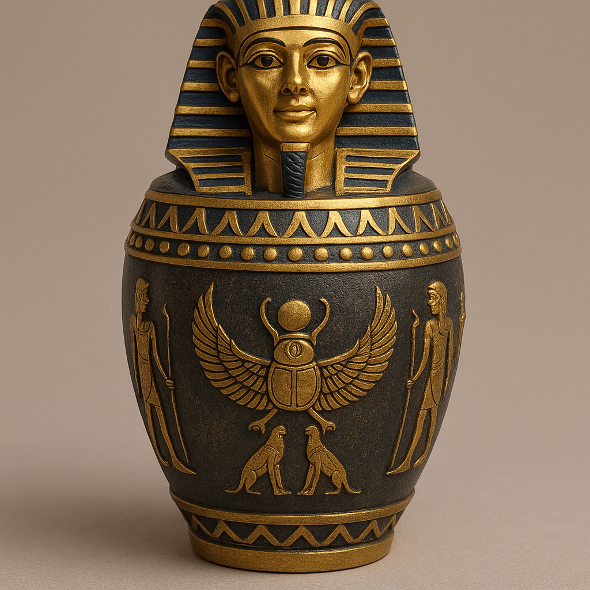
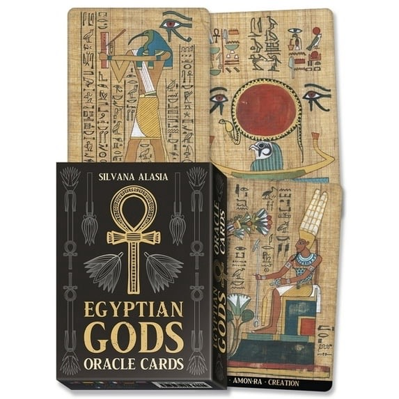
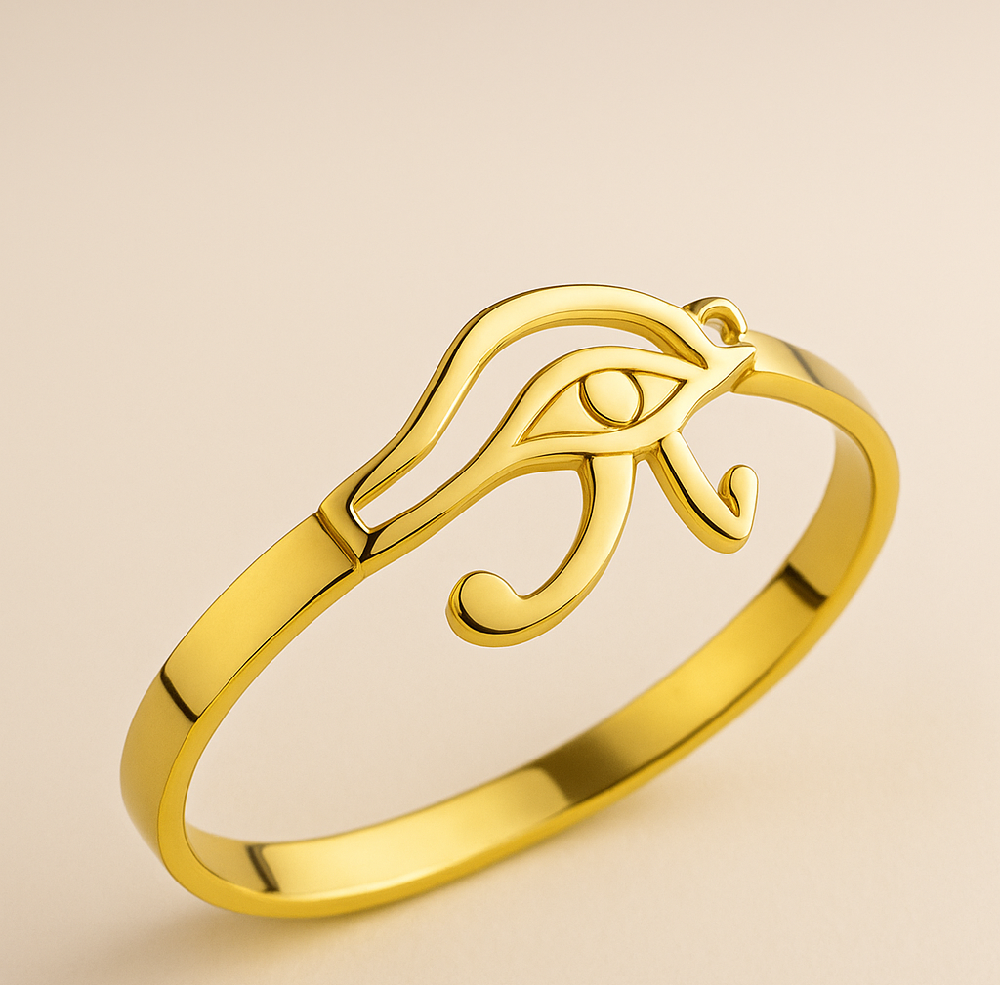

Per Hetep en Sḫm
Per Hetep — House of Divine Peace and Power
These sacred works carry divine intention from the Temple of Royal Sovereignty, offered to guide, empower, and align your journey with Ma’at.
Solar Reading — Divine Alignment
Complimentary • 15 Minutes
A brief alignment reading guided by the Neteru to show where your light is sitting now.
𓋹 Sacred Readings
Receive divine guidance aligned with your journey. These readings open your path and bring clarity from the Neteru.
Cardology Reading
$38
A 30-minute Cardology reading revealing your birth card, yearly cycles, personal patterns,
and current spiritual timeline — bringing clarity and insight to the energies moving through your life.
Intuitive Reading
$88
A deep 55-minute intuitive session guided by your ancestors and your higher self.
Direct messages, clarity, emotional insight, and spiritual alignment for your current season.
𓍯 Memorial & Ancestral Keepsakes
These sacred vessels are inspired by the ancient Per Wbn — the House of Purification. Each canopic vessel carries the energy of remembrance, lineage, protection, and ancestral continuity. They serve as sacred holders for petitions, ashes, heirlooms, offerings, or items tied to your family’s legacy.

Pharaoh Canopic Vessel
$65
Symbol of sovereignty, lineage, and rulership.
This vessel holds items tied to your divine authority, family legacy, and personal power.
It represents the restoration of your throne and your role as a living ancestor.
Add to Cart
This vessel holds items tied to your divine authority, family legacy, and personal power.
It represents the restoration of your throne and your role as a living ancestor.

Djehuty Canopic Vessel
$65
Aligned with Divine Intelligence, Writing, Records, and Sacred Memory.
Use for petitions, written prayers, business intentions, ancestral contracts, or spiritual documents.
Holds the frequency of order, wisdom, and cosmic law.
Add to Cart
Use for petitions, written prayers, business intentions, ancestral contracts, or spiritual documents.
Holds the frequency of order, wisdom, and cosmic law.

Ḥeru Canopic Vessel
$65
Guardian of vision, destiny, clarity, and spiritual perception.
This vessel guards your path, protects your home, and strengthens the Eye of Heru within your lineage.
Ideal for protective amulets, oils, or sacred items tied to sight and intuition.
Add to Cart
This vessel guards your path, protects your home, and strengthens the Eye of Heru within your lineage.
Ideal for protective amulets, oils, or sacred items tied to sight and intuition.

Anubis Canopic Vessel
$65
Guardian of transitions, ancestors, and safe passage.
Use for ashes, memorial items, or anything tied to your loved ones who transitioned.
Carries the force of protection through portals and spiritual thresholds.
Add to Cart

Bastet Canopic Vessel
$65
Holder of joy, feminine power, harmony, and home protection.
Perfect for items tied to love, children, family peace, beauty rituals, or womb healing.
Brings gentle but powerful safeguarding energy into your space.
Add to Cart

Ankh + Eye of Heru Ring
$33
Stainless steel ring carrying the Ankh and Eye of Heru. Available in sizes 7–13.
Add to Cart

Egyptian Gods Oracle Deck
$11.88
36-card oracle deck with Kemetic imagery of the Neteru. Ideal for altar work, daily pulls, and intuitive readings.
Add to Cart

Eye of Heru Bracelet (Gold)
$18
Elegant gold-plated bracelet honoring the Eye of Heru — symbol of protection, clarity, and power.
Add to Cart